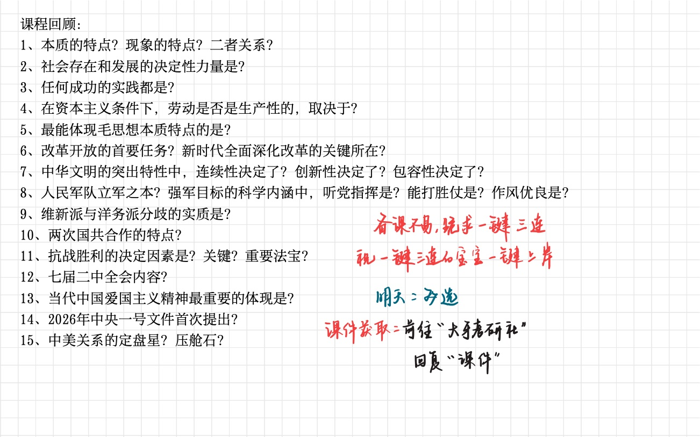

1、本质的特点？现象的特点？二者关系？
①本质是事物的根本性质、内在联系，具有客观性、稳定性、一般性和深藏性，不能靠感官直接感知，只能通过理性思维把握；②现象是事物的外部联系和表面特征，具有个别性、具体性、丰富性、易变性和可感知性；③二者是表现与被表现的关系，本质是现象的根据，现象是本质的外部表现，现象有真象与假象，假象也是本质的表现，故必须透过现象抓住本质。
2、社会存在和发展的決定性力量是？
物质生产方式。地理环境和人口因素是社会存在和发展的必要条件，物质生产方式是社会存在和发展的基础及决定力量，决定社会的性质、结构和面貌及其变革。
3、任何成功的实践都是？
都是真理尺度与价值尺度的统一，即合规律性与合目的性的统一：既遵循客观规律，又满足主体的需要和目的。
4、在资本主义条件下，劳动是否是生产性的，取决于？
取决于劳动能否为资本家带来剩余价值。能为资本家生产剩余价值的劳动就是生产性劳动，与劳动是生产物质产品还是提供服务无关。
5、最能体现毛思想本质特点的是？
贯穿于毛泽东思想科学体系中的立场、观点和方法，即毛泽东思想活的灵魂——实事求是、群众路线、独立自主。
6、改革开放的首要任务？新时代全面深化改革的关键所在？
①改革开放的鲜明特征和首要任务是解放和发展社会生产力；②新时代全面深化改革的关键在于处理好政府和市场的关系，使市场在资源配置中起决定性作用、更好发挥政府作用。
7、中华文明的突出特性中，连续性决定了？创新性决定了？包容性决定了？
①连续性从根本上决定了中华民族必然走自己的路；②创新性从根本上决定了中华民族守正不守旧、尊古不复古的进取精神，决定了中华民族不惧新挑战、勇于接受新事物的无畏品格；③包容性从根本上决定了中华民族交往交流交融的历史取向，决定了中华文明开放包容、兼收并蓄的胸怀。
8、人民军队立军之本？强军目标的科学内涵中，听党指挥是？能打胜仗是？作风优良是？
①人民军队的立军之本是政治建军；②强军目标的科学内涵中，听党指挥是灵魂、决定军队建设的政治方向，能打胜仗是核心、反映军队的根本职能和军队建设的根本指向，作风优良是保证、关系军队的性质宗旨本色。
9、维新派与洋务派分歧的实质是？有课不易，玩求一键三连
实质是资产阶级思想与封建思想的第一次正面交锋，核心是要不要学习西方的政治制度与思想文化——洋务派只主张学器物、守“中体西用”，维新派要求变革政治制度。
10、两次国共合作的特点？
①第一次国共合作（1924—1927）是“党内合作”：共产党员以个人身份加入国民党，国民党改组为工人、农民、城市小资产阶级和民族资产阶级的革命联盟，以新三民主义为共同政治基础，中共保持思想上、政治上、组织上的独立性；②第二次国共合作（1937—1945）是“党外合作”：没有统一的组织形式和成文纲领，国共两党各有政权和军队，中共坚持独立自主原则、坚持对人民军队和抗日根据地的领导权。
11、抗战胜利的决定因素是？关键？重要法宝？祝一裤三達的金宝-键上岸
决定因素是以爱国主义为核心的民族精神；关键是中国共产党的中流砥柱作用；重要法宝是全民族抗战（抗日民族统一战线）。
12、七届二中全会内容？
1949年3月在河北平山县西柏坡召开：①党的工作重心由乡村转移到城市，城市工作必须以生产建设为中心；②提出“两个务必”——务必使同志们继续地保持谦虚、谨慎、不骄、不躁的作风，务必使同志们继续地保持艰苦奋斗的作风；③规定全国胜利后党在政治、经济、外交方面应当采取的基本政策，指出由农业国变为工业国、由新民主主义社会变为社会主义社会的发展方向；④提醒警惕资产阶级“糖衣炮弹”的袭击。
13、当代中国爱国主义精神最重要的体现是？明天：珍选
坚持爱国和爱党、爱社会主义相统一。这是当代中国爱国主义的本质要求，也是爱国主义精神最重要的体现。
14、2026年中央一号文件首次提出？课件获取二前往“大牙著研社”
首次提出实施“常态化精准帮扶”，并对过渡期结束后的常态化帮扶作出系统性部署（文件为《中共中央 国务院关于锚定农业农村现代化 扎实推进乡村全面振兴的意见》）。
15、中美关系的定盘星？压舱石？回夏、课件"
定盘星是元首外交；压舱石是经贸合作（经贸关系）。
课程回顾原图
